Section 12: Statistical Distributions#
pwd
'/Users/jamesirving/Documents/GitHub/_COHORT_NOTES/my-best-lessons-and-code-jmi/Phase_2/topic_12_statistical_distributions'

For online-ds-ft-070620
study group: 08/07/20
Learning Objectives#
Learn about probability functions and their relation to distributions:
PMF / PDF / CDF
Discuss the different types of distributions and their use cases
Use interactive mini-dashboards to visualize some distributions (binomial, normal)
Practice turning math equations into functions
Normal Distribution -> Standardized Normal Distribution
Questions:#
Probability Functions: PMF vs PDF vs CDF#
import matplotlib.pyplot as plt
import pandas as pd
import seaborn as sns
import numpy as np
plt.style.use('fivethirtyeight')
# !pip install -U fsds
import fsds as fs
import coin_toss as ct
%load_ext autoreload
%autoreload 2
Probability Mass Function#

results = ct.coin_toss(67,verbose=False)
fig,ax = ct.compare_results(results)
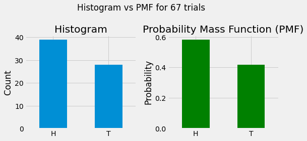
Converts counts to probability of a discrete function by normalizing so that the sum of all outcomes == 1.
Can test what is the probability that \(x\) takes on a particular value \(k\)
\(P(X=k)\)
“If we have x outcomes, what is the probability of getting k (our value of interest) from x?”
df = fs.datasets.load_height_weight()#pd.read_csv('weight-height.csv')
df.head()
| Gender | Height | Weight | |
|---|---|---|---|
| 0 | Male | 73.847017 | 241.893563 |
| 1 | Male | 68.781904 | 162.310473 |
| 2 | Male | 74.110105 | 212.740856 |
| 3 | Male | 71.730978 | 220.042470 |
| 4 | Male | 69.881796 | 206.349801 |
Expected Value and Variance of PMFs#
We can use PMFs to calculate the expected values/outcomes/probability
the expected value of your discrete random value X is given by:
The variance is given by:
Probability Density Function#

fig, ax = plt.subplots(ncols=2,figsize=(9,5))
df['Height'].hist(ax=ax[0])
ax[0].set(ylabel='Counts',xlabel='Height',title='Histogram')
sns.distplot(df['Height'],hist=False,ax=ax[1])
ax[1].set(ylabel='Probability Density',title='PDF')
plt.tight_layout()
/opt/anaconda3/envs/learn-env/lib/python3.6/site-packages/seaborn/distributions.py:2551: FutureWarning: `distplot` is a deprecated function and will be removed in a future version. Please adapt your code to use either `displot` (a figure-level function with similar flexibility) or `kdeplot` (an axes-level function for kernel density plots).
warnings.warn(msg, FutureWarning)
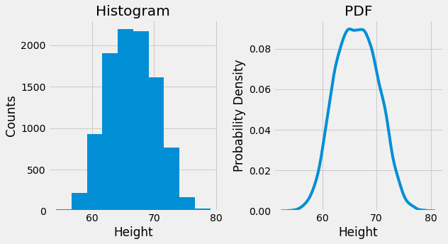
Expected Value and Variance of PDFs#
The main takeaway here is that you simply can’t use the same summation expression because \(P(X=x_i) = 0\) for any \(x_i\).

The formal mathematical representation for calculating an area under the curve is given by:
To obtain a probability of observing a value in an interval \([a,b]\), you can use an integral (which gives you the area under the curve) from a to b using your PDF \(f(x)\)
male_df = df.groupby('Gender').get_group('Male')
female_df = df.groupby('Gender').get_group('Female')
sns.displot(data=df,x='Height',hue='Gender')
plt.legend()
No handles with labels found to put in legend.
<matplotlib.legend.Legend at 0x7ffe85778828>
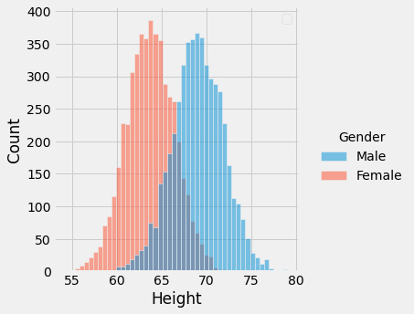
Kernel Density Estimation#
Non-parametric estimation to plot a curve at every individual data point (kernels)
Added together to plot smooth density estimation ( most common kernel is Gaussian)
Below example histogram and kde are from the same data

def kde_boxplot(x):
import scipy.stats as stats
# Create two vertical subplots sharing 15% and 85% of plot space
# sharex allows sharing of axes i.e. building multiple plots on same axes
fig, (ax, ax2) = plt.subplots(2, sharex=True,
gridspec_kw={"height_ratios": (.15, .85)},
figsize = (10,8) )
sns.distplot(x,
hist=True, hist_kws={
"linewidth": 2,
"edgecolor" :'red',
"alpha": 0.4,
"color": "w",
"label": "Histogram",
},
kde=True, kde_kws = {'linewidth': 2,
'color': "blue",
"alpha": 0.7,
'label':'Kernel Density Estimation Plot'
},
fit= stats.norm, fit_kws = {'color' : 'green',
'label' : 'parametric fit',
"alpha": 0.7,
'linewidth':2},
ax=ax2)
ax2.set_title('Density Estimations')
sns.boxplot(x=x, ax = ax,color = 'red')
ax.set_title('Box and Whiskers Plot')
# ax2.set(ylim=(0, .08))
# plt.ylim(0,0.11)
plt.legend();
kde_boxplot(df['Height'])
Density Estimation and Plotting#
Kernel density estimation or KDE is a common non-parametric estimation technique to plot a curve (the kernel) at every individual data point.
Cumulative Distribution Function#

To calculate the \(CDF(x)\) for any value of \(x\), we compute the proportion of values in the distribution less than or equal to \(x\) as follows:
The Cumulative Distribution Function, CDF, gives the probability that the variable \(X\) is less than or equal to a certain possible value \(x\).

Types of Distributions#
Distributions: Discrete vs Continuous#
Continuous vs Discrete Distributions & their probability functions


Discrete:
Binomial
Geometric
Poisson
Continuous:
Uniform
Normal
Distribution descriptions in words#
Binomial Distribution: “I flip a fair coin 5 times. What are the chances that I get heads 0 times? 1 time? 2 times? Etc…”
The Exponential Distribution describes the probability distribution of the amount of time it may take before an event occurs. In a way, it solves the inverse of the problem solves by the Poisson Distribution.
The Poisson Distribution lets us ask how likely any given number of events are over a set interval of time.
Experiment Vocab#
Experiments
Trials: repeated event
Outcomes: whats happens each trial
Discrete Distributions#
Bernoulli Trials and Binomial Distribution#
Bernoulli Distribution/Trials#
Probability of \(x\) successes in \(n\) trials for Bernoulli/binomial variable (binary outcome)
Described by only one parameter \(p\)
For binomial trial: $\(Y = Bernoulli(p)\)\( and \)p=P(Y=1)=0.8$
Binomial Distributions#
Binomial Distribution: “I flip a fair coin 5 times. What are the chances that I get heads 0 times? 1 time? 2 times? Etc…”
For binomial distribution, events are independent. $\( P(Y=k)= \binom{n}{k} p^k(1-p)^{(n-k)}\)$
from math import factorial
def combination(n,k):
combin = factorial(n)/(factorial(n-k)*factorial(k))
return combin
def permutation(n,k):
permut = factorial(n)/factorial(n-k)
return permut
def binomial_P_k_success(n,k,p):
"""
Calculates P(x=k) for a binomial distrubtions.
Args:
n (int): number total options
k (int): number to select
p (int): prob of success for binary outcome
Returns:
pk(float): prob that x=k
"""
combs = combination(n,k)
pk = combs*(p**k)*((1-p)**(n-k))
return pk
# Flip a coin 10 times, what the chacnce of getting 7 heads?
binomial_P_k_success(7,4,0.5)
HOP OVER TO
distributions_notebook_app.ipynb
Poisson#
Represents the probability of \(n\) events in a given time period when the rate of occurrence is constant
Poisson Probability Distribution: $\(p(x) = \frac{\lambda^xe^{-\lambda}}{x!}\)$#
Also note that lambda \(\lambda\) is the now the average number of successes that we anticipate in a given interval: the probability \(p\) of success, times the number of intervals \(n\).
def poisson_probability(lambd,x):
res = (lambd**x)*(np.exp(-lambd)) / factorial(x)
return res
Question 1 A fireman fights, on average, 4 fires per month. What is the probability that a fireman is called to two different fires this week?
lambd = 1/4
poisson_probability(lambd,2 )
Uniform#
All outcomes are equally likely.
BOTH continuous AND discrete
Exponential Distribution#
The Exponential Distribution describes the probability distribution of the amount of time it may take before an event occurs. In a way, it solves the inverse of the problem solves by the Poisson Distribution.
Once we know the decay rate, we can use the Probability Density Function to tell us the exact point probability for any length \(x\).
The Probability Density Function allows us to answer questions such as “What is the probability that it takes exactly 4 minutes to ring up this customer?”
Since we are talking about a continuously-valued function, we’ll also often want to make use of the Cumulative Distribution Function. This allows us to answer questions such as “what is the probability that it will take less than 4 minutes to ring up this customer?”
import numpy as np
def exp_pdf(mu,x):
decay_rate = 1/mu
pdf= decay_rate*np.exp(-decay_rate*x)
return pdf
def exp_cdf(mu,x):
decay_rate = 1/mu
return 1- np.exp(-decay_rate*x)
Steven is picking up a friend at the airport and their plane is late. The late flight is 22 minutes behind schedule. What is the probability that Steven will wait 30 minutes or less for his friend’s flight to land?
exp_cdf(22,30)
Normal Distribution#
The Normal Distribution is symmetrical and its mean, median and mode are equal.
area under curve is equal to 1.0
denser in the center and less dense in the tails
defined by two parameters, the mean (\(\mu\)) and the standard deviation (\(\sigma\)).

sns.displot(male_df['Height'])
<seaborn.axisgrid.FacetGrid at 0x7ffe85c027f0>
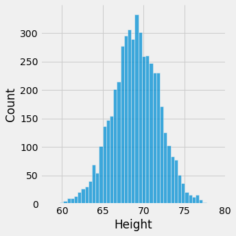
import scipy.stats as stats
y = stats.zscore(male_df['Height'])
sns.displot(y)
<seaborn.axisgrid.FacetGrid at 0x7ffe85f10128>
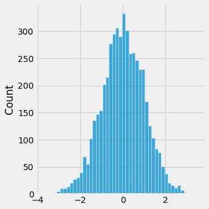
import scipy.stats as stats
x = np.arange(-4,4,.01)
y = stats.norm.pdf(x)
fig,ax = plt.subplots(figsize=(10,6),nrows=1)
ax.plot(x,y,zorder=-1,lw=3)
[<matplotlib.lines.Line2D at 0x7ffe86110860>]
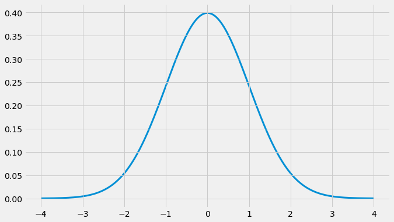
fig,axes = plt.subplots(figsize=(8,8),nrows=2)
ax =axes[0]
ax.plot(x,y,zorder=-1,lw=3)
# stats.norm.cdf(4)
ax.axvline(0)
ax.set(title='PDF')
ax.axvline(-1,ls='--',c='green')
ax.axvline(1,ls='--',c='green')
ax.axvline(-2,ls=':',c='orange')
ax.axvline(2,ls=':',c='orange')
ax=axes[1]
ax.plot(x, stats.norm.cdf(x))
ax.set(title='CDF')
ax.set(ylim=0,xlim=(x[0],x[-1]))
fig.tight_layout()
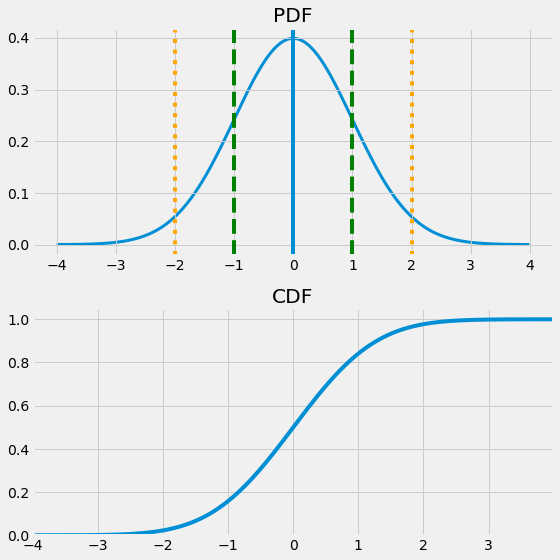
## Prove percentage rules -
print(round(stats.norm.cdf(1) - stats.norm.cdf(-1),3))
round(stats.norm.cdf(2) - stats.norm.cdf(-2),3)
0.683
0.954
stats.norm.cdf([1,2])
array([0.84134475, 0.97724987])
Standardized Normal Distribution#
Special case of the normal distribution where \(\mu=0\) and \(\sigma=1\)
dfh = fs.datasets.load_height_weight()
dfh.head()
| Gender | Height | Weight | |
|---|---|---|---|
| 0 | Male | 73.847017 | 241.893563 |
| 1 | Male | 68.781904 | 162.310473 |
| 2 | Male | 74.110105 | 212.740856 |
| 3 | Male | 71.730978 | 220.042470 |
| 4 | Male | 69.881796 | 206.349801 |
Z-Scores#
dfh.hist(bins='auto',figsize=(10,5))
array([[<AxesSubplot:title={'center':'Height'}>,
<AxesSubplot:title={'center':'Weight'}>]], dtype=object)
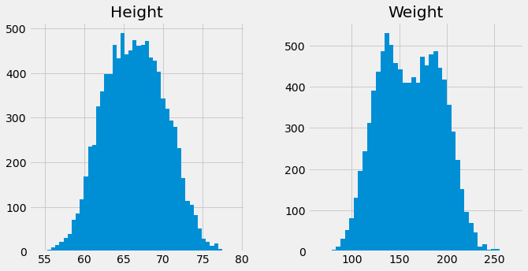
Z-score#
The standard score (more commonly referred to as a \(z\)-score) is a very useful statistic because it allows us to:
Calculate the probability of a certain score occurring within a given normal distribution and
Compare two scores that are from different normal distributions.
Any normal distribution can be converted to a standard normal distribution and vice versa using this equation:
where \(x\) is an individual data point
\(\mu\) is the mean
\(\sigma\) is the standard deviation
dfh['HeightZ'] = (dfh["Height"] - dfh['Height'].mean())/ dfh['Height'].std()
dfh['WeightZ'] = (dfh["Weight"] - dfh['Weight'].mean()) /dfh['Weight'].std()
dfh.hist(figsize=(12,10),bins='auto')
array([[<AxesSubplot:title={'center':'Height'}>,
<AxesSubplot:title={'center':'HeightZ'}>],
[<AxesSubplot:title={'center':'Weight'}>,
<AxesSubplot:title={'center':'WeightZ'}>]], dtype=object)
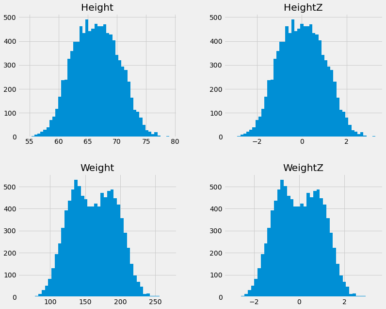
Z-Scoring does not affect the data distribution, just standardizes units#
Statistical Testing with Z-scores and p-values#
Once data is standardized, can start answering questions about population membership usint \(Z\)-Tests
Population vs Sample#

A population is the collection of all the items of interest in a study. The numbers you obtain when using a population are called parameters.
A sample is a subset of the population. The numbers you obtain when working with a sample are called statistics.
What Are Hypotheses ?#
Null Hypothesis: \(H_0\) there is no relationship / the samples come from the same population.
Alternative: \(H_A\)/\(H_1\) there is a relationship / the samples DO NOT come from same distribution
\(\large \alpha\)= 0.05#
What does it mean?
cutoff for judging whether our sample is “significantly” different than the population.
ax = dfh['Height'].hist(bins='auto',figsize=(10,5))
meanH = dfh['Height'].mean()
stdH = dfh["Height"].std()
ax.axvline(meanH,c='k')
fig =ax.get_figure()
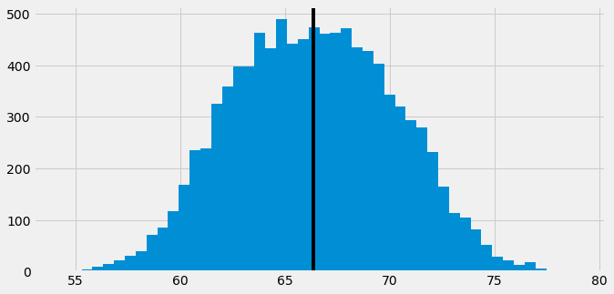
potential_alien_lifeform = 77#height
ax.axvline(potential_alien_lifeform,color='red')
fig
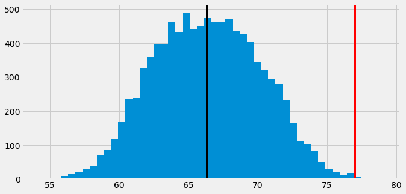
H0 = The lifeform’s height comes from the human population.
H1 = The lifesform’s height is significantly different than humans. (its from another population).
dfh['HeightZ'] = (dfh["Height"] - dfh['Height'].mean())/ dfh['Height'].std()
z_alien = (potential_alien_lifeform - meanH) /stdH
z_alien
2.7634470526084107
One-Sample \(z\)-test#
The one-sample \(z\)-test is used only for tests related to the sample mean.

alpha=0.05
1 - stats.norm.cdf(z_alien)
0.0028597185423705485
END OF 08/07 STUDY GROUP#
Set |
\(H_0 \) |
\(H_a\) |
Tails |
|---|---|---|---|
1 |
\(\mu= M \) |
\(\mu \neq M \) |
2 |
2 |
\(\mu \geq M \) |
\(\mu < M \) |
1 |
3 |
\(\mu \leq M \) |
\(\mu > M \) |
1 |
Distribution Characteristics#
Skewness#
Symmetrical distribution: skewness = 0
Fisher-Pearson Coefficient of skewess:
Rules of thumb
Symmetrical-ish: -0.5 to +.05
Moderate Skew:
Negative skew: -1 to -0.5
Positive skew: +0.5 to +1
Highly skewed:
Less than -1
Greater than +1

Kurtosis#
Lengths of tails of distribution to describe extreme values (outliers)
Univariate kurtosis: $\(\Sigma N_{i=1} \frac{{(Yi−\bar{Y})}^4}{N} / {\sigma^4}\)$
Mesokurtic:
Kurtosis similar to standard normal distribution
Leptokurtic (Kurtosis >3)
Tails are fatter, peak is higher sharper
Data are heavy-tailed or many outliers
Platykurtic: (Kurtosis < 3)
Shorter peak, tails are thinner than the normal distribution.
Data are light-tailed or lack of outliers vs normal dist

APPENDIX#
Continuous Distributions#
Normal Distribution#
Key characteristics of the normal distribution:
Normal distributions are symmetric around their mean.
mean = median = and mode of a normal
area under curve is equal to 1.0
denser in the center and less dense in the tails
defined by two parameters, the mean (\(\mu\)) and the standard deviation (\(\sigma\)).
Around 68% of the area of a normal distribution is within one standard deviation of the mean (\((\mu-\sigma)\) to \((\mu + \sigma)\))
Approximately 95% of the area of a normal distribution is within two standard deviations of the mean (\((\mu-2\sigma)\) to \((\mu + 2\sigma)\)).
Normal Density Function#
Density of normal distribution for given value of x
Can describe from its center and spread $\(y = \frac{1}{\sigma \sqrt{2}{2\pi}}e^{\frac{{(x -\mu)}{^2}}{2 \sigma ^{2}}}\)$
\(\mu\) = mean
\(\sigma\) = standard deviation
\(\pi \approx 3.14159\)
\(e \approx 2.71828\)
import numpy as np
import seaborn as sns
mu, sigma = 0.5, 0.1
n = 1000
s = np.random.normal(mu, sigma, n)
sns.distplot(s);
Standardized Normal Distribution#
Z-score#
The standard score (more commonly referred to as a \(z\)-score) is a very useful statistic because it allows us to:
Calculate the probability of a certain score occurring within a given normal distribution and
Compare two scores that are from different normal distributions.
Any normal distribution can be converted to a standard normal distribution and vice versa using this equation:
where \(x\) is an individual data point
\(\mu\) is the mean
\(\sigma\) is the standard deviation


import numpy as np
import seaborn as sns
fig,ax= plt.subplots(ncols=2, figsize=(10,4))
mean1, sd1 = 5, 3 # dist 1
mean2, sd2 = 10, 2 # dist 2
d1 = np.random.normal(mean1, sd1, 1000)
d2 = np.random.normal(mean2, sd2, 1000)
ax[0].set_title('Raw')
sns.distplot(d1,ax=ax[0]);
sns.distplot(d2,ax=ax[0]);
ax[1].set_title('Standardized')
sns.distplot([(x - d1.mean())/d1.std() for x in d1],ax=ax[1]);
sns.distplot([(x - d2.mean())/d2.std() for x in d2], ax=ax[1]);